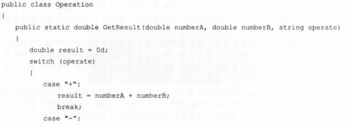
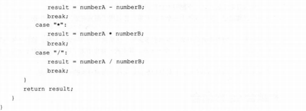
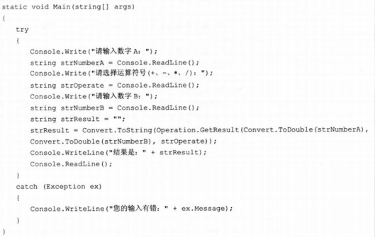
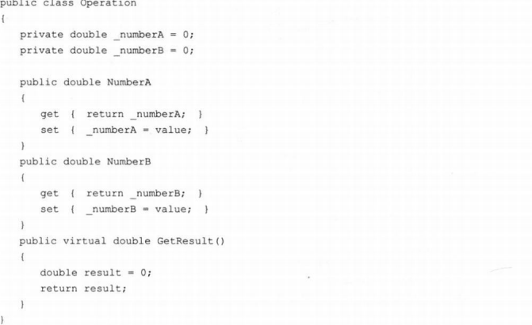
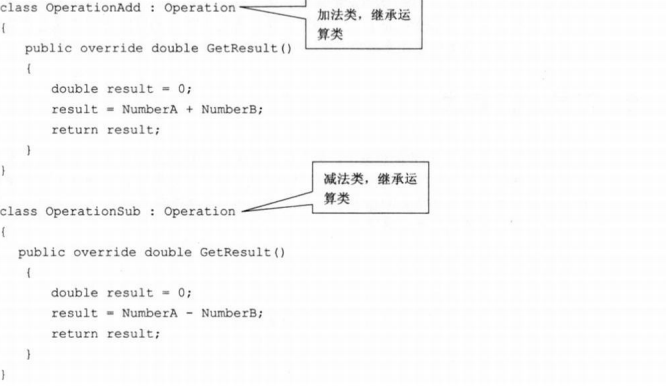
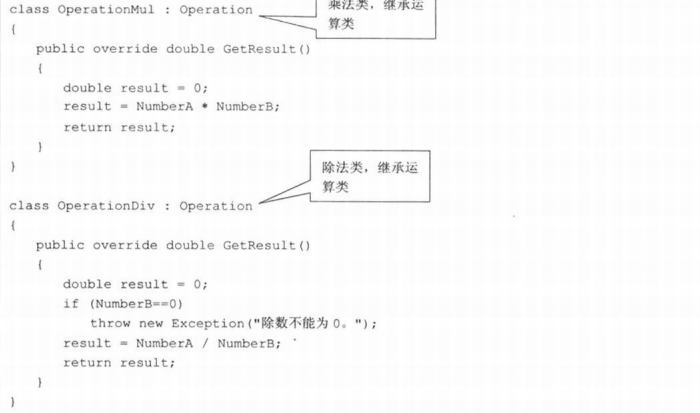
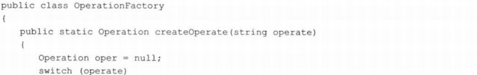
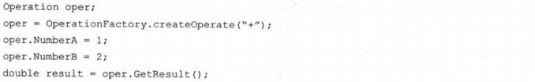

面向对象的好处在于通过封装、继承、多态把程序的耦合度降低。使用设计模式可以使得程序更加的灵活，容易修改且易于复用。
简单工厂模式
- 例子：使用任何一种面向对象的语言实现一个计算器控制台程序，要求输入两个数和运算符号，得到结果。
- 首先使用面向对象的
封装特将操作抽成一个类：
Operation运算类：


客户端代码：

在只使用封装的基础上，如果此时要添加一个求根号的操作，则需在Operation类的switch中新增一个分支，但是应该避免在新增分支的时候对原有代码进行修改。因此应该把加减乘除等运算分离，修改其中一个不影响另外几个，增加其它运算算法也不影响其它代码。 - 使用
继承抽离操作类中的具体算法：

定义四个子类继承操作类：


在该基础上可以实现，如果想要新增或修改一个算法，只需新增一个子类或修改一个子类，对其它方法不会产生影响。
但是问题来了，不知道该如何让计算器去实例化对象，总不能在客户端代码里写一个switch判断，看是什么操作符返回什么运算子类进行操作吧。那么如果再新加一个运算子类（比如说开根号），总不能再去修改客户端代码，在switch里添加一个分支吧。 - 使用
多态添加一个工厂类，实例化出合适的对象：
工厂类：

客户端代码：
 - 类图：

这样再新加一个操作，只需新增一个操作子类，然后再在工厂类里添加一个分支就行了。